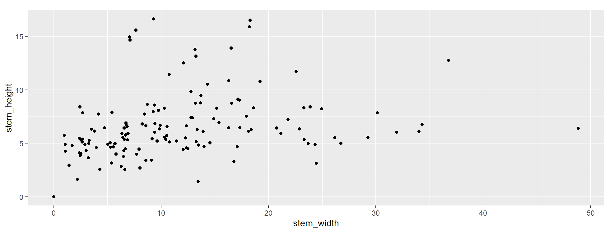

#Load package
library("mgrtibbles")
#Set seed for random sampling
set.seed("483")
#mushroom_tbl tibble for demonstration
mushroom_tbl <- mgrtibbles::mushroom_tbl |>
#Random sample of 150 rows
dplyr::slice_sample(n = 150, replace=FALSE)
#Reset random seed to normal operation
set.seed(NULL)Coordinate systems
The coordinate system (x and y) can be modified with various functions/components. This page will only show how to modify the aspect ratio with ggplot2::coord_fixed().
Other coordinate systems are in the below link.
Dataset
We’ll recreate a plot in the geom_point() chapter, so we’ll load the mushroom_tbl data from the mgrtibbles package (hyperlink includes install instructions). We will extract a random sample of 150 rows with slice_sample().
Fixed ratio
By default when a ggplot is created the x and y axis will each take up as much space as the width and height the plotting area allows. However, this can lead to an extreme aspect ratio for the x and y axes. This may be unwanted for certain types of data. For example, ordination plots (such as PCoA and NMDs) are generally better with an aspect ratio of 1.
To control the aspect ratio of the x and y axes the function/component ggplot2::coord_fixed() can be added. The ratio can be specified with the option ratio=. The numeric value equals the y:x ratio. Examples:
ratio=1= 1:1 y:x ratioratio=5= 5:1 y:x ratioratio=1/5= 1:5 y:x ratio
Create the default scatter plot.
In this case we will have an aspect ratio of 1 for the x and y axis. This is carried out by adding ggplot2::coord_fixed(ratio = 1).
mushroom_tbl |>
ggplot2::ggplot(aes(x = stem_width, y = stem_height)) +
ggplot2::geom_point() +
#Fixed aspect ratio
ggplot2::coord_fixed(ratio = 1)
In the above plot you will notice there is a more than times the width than height. This is because the stem_width values go from 0 to a bit less than 50 whilst the stem_height values go from 0 to a bit more than 15. What is important is that the value from 0-10 (and continuing) takes up the same width and height in the resulting plot. This 1:1 ratio allows you to see relationships without the shape becoming warped by an uneven
Note: When saving a plot with ggsave() ensure your chosen height and width have the same/similar aspect ratio. Otherwise you may end up with blank space on the sides or the top and bottom.